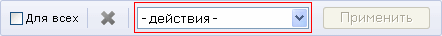

В этом разделе
Форма Заказы (Магазин > Заказы) служит для управления заказами клиентов магазина. С помощью этой формы вы можете:
- просматривать заказы на товары и услуги магазина;
- удалять и отменять заказы;
- изменять состояния заказов и их статусы.
Форма поиска
Поиск интересующих вас заказов. По умолчанию выводится только поле Дата заказа. Остальные поля подключаются по кнопке Дополнительно.
| Поле | Описание |
|---|---|
| Дата заказа | Поиск по дате оформления заказа. |
| Код заказа | Поиск по коду заказа. |
| Сайт / Валюта | Указывается, заказы из какого сайта и оплаченные какой валютой следует отображать. |
| Статус заказа | Позволяет установить фильтр на отображение всех заказов или заказов только в определённом статусе. Например:
|
| Дата изменения статуса | Позволяет выбрать заказы, статус которых изменился в течение определённого периода времени. Для задания временного диапазона можно использовать либо список с количеством дней, либо поля-календари. |
| Оплачен | Позволяет отобразить оплаченные, неоплаченные или все заказы. |
| Доставка разрешена | Позволяет отобразить заказы, доставка которых разрешена, не разрешена или все заказы. |
| Дата разрешения доставки | Позволяет выбрать заказы, доставка которых была разрешена в течение определённого периода времени. Для задания временного диапазона можно использовать либо список с количеством дней, либо поля-календари. |
| Платёж авторизован в ПС | Позволяет отобразить либо все заказы, либо имеющие определённый статус авторизации в платёжной системе. |
| Платёжная система | Позволяет отобразить либо все заказы, либо оплаченные с использованием определённой платёжной системы. |
| Отменён | Позволяет отобразить отменённые, неотменённые или все заказы. |
| Покупатель | Данное поле позволяет установить фильтр по имени, фамилии и E-Mail адресу покупателя. Если вы не знаете точные данные, то воспользуйтесь групповыми символами % и ? (например, если вы знаете только, что E-Mail покупателя начинается с символов "buyer", то введите в этом поле "buyer%"). |
| Код товара в заказе | Позволяет осуществить поиск заказа по коду товара, включённого в заказ. |
| Внешний код товара | Позволяет осуществить поиск заказа по внешнему коду проданного товара. |
| Аффилиат | Позволяет отобразить заказы, сделанные от определённого аффилиата. |
| Купон на скидку каталога | Поиск заказов, оформленных с помощью скидки по купону. |
| Показать все условия | Отражает все поля поиска. |
| Скрыть все условия | Скрывает все поля поиска (кроме поля по умолчанию). |
Чтобы отобрать заказы по заданным критериям поиска, нажмите кнопку Найти. Для отображения всех заказов нажмите кнопку Отменить.
Контекстная панель
| Кнопка | Описание |
|---|---|
| Excel | Экспорт данные из отображаемой таблицы в формат MS Excel. |
| Настроить | Переход к диалогу настройки внешнего вида отчётной формы. |
Список заказов
Форма содержит список заказов, а также значения основных полей этих заказов.
| Поле | Описание |
|---|---|
| Колонка флажков | Выбор заказов, к которым предполагается применить какое-либо правило или действие. |
| Действия | Действия над заказом:
|
| ID | Номер и дата оформления заказа. По клику на номере можно перейти в форму детального просмотра свойств заказа.
|
| Оплачен | Текущий статус оплаты заказа:
|
| Отменён | Текущий статус отменены заказа:
|
| Статус | Текущий статус заказа (например, Принят, В обработке, Доставлен). |
| Сумма | Общая сумма заказа с учётом применяемых скидок, налогов, а также стоимости доставки. |
| Покупатель | Имя и фамилия покупателя, указанные им при регистрации в системе, а также присвоенный данному покупателю код. Код представлен в виде ссылки на форму редактирования пользователя. |
| Платёжная система | Платёжная система, выбранная покупателем для оплаты заказа. |
| Оплата ПС | Статус оплаты, произведённой через выбранную платёжную систему (если предусмотрено получение статуса оплаты от данной платёжной системы). Например, успешна, не успешна, не проводилась. |
| Блокировка | Значение поля информирует о доступности элемента для редактирования: |
| Позиции | Содержимое заказа. |
Операции над заказами
К каждому заказу, представленному в списке, можно применить определённый набор операций. Для этого отметьте нужный заказ (заказы), установив флажок в крайнее левое поле напротив заказа, затем воспользуйтесь командами в поле Действия, расположенном на панели управления внизу страницы.

Выберите необходимое действие в списке и нажмите кнопку Применить.
| Действие | Описание |
|---|---|
| Обновить статусы платёжных систем | Обновить информацию о статусах заказов, для оплаты которых были выбраны платёжные системы, позволяющие запросить статус оплаты заказа. |
| Экспортировать в CSV | Экспорт информации о заказах в CSV файл. |
| Экспортировать в CommerceML | Экспорт информации о заказах в XML файл. |
| Экспортировать в CommerceML 2.0 | Экспорт информации о заказах в XML файл. |
Как отпечатать документы по заказу
Для печати документов по конкретному заказу необходимо перейти в форму подробного просмотра заказа
Как оплатить заказ
Для оплаты заказа (т.е. перевода параметра заказа Оплачен в положительный статус) перейдите в форму подробную информацию о заказе. В группе Оплата нажмите ссылку Сменить флаг у параметра Оплачен.
| © «Битрикс», 2001-2008, «1C-Битрикс», 2008 | 1С-Битрикс: Управление сайтом |